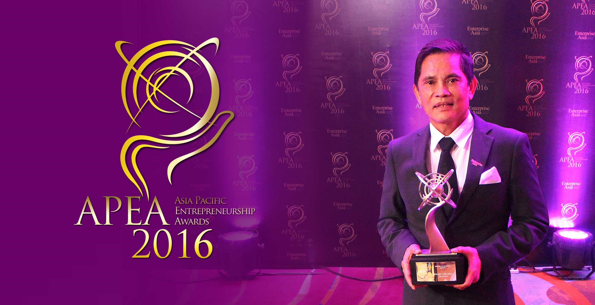
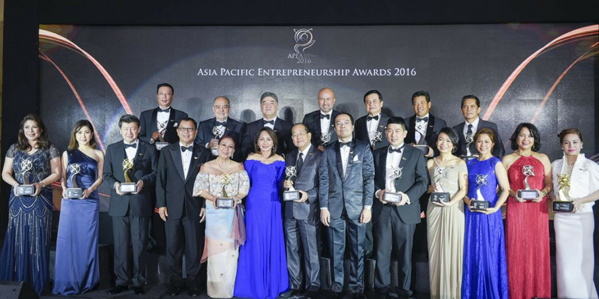

<section class="mt-[81px] py-20 bg-[#f7f7f7]">
    <div class="max-w-7xl mx-auto px-4">

        <!-- Section Header -->
        <div class="mb-12">
            <div class="max-w-5xl mx-auto flex items-start space-x-4">
                <div class="w-1 h-40 bg-green-500"></div>
                <div>
                    <h2 class="text-4xl font-bold text-gray-800">RCD Land’s Roland Delantar bags Asia Pacific
                        Entrepreneurship Award 2016</h2>
                    <p class="text-gray-600 text-base mt-1 max-w-2xl">
                        Mr. Roland Delantar, President and CEO of RCD Land Inc., has been awarded the Asia Pacific
                        Entrepreneurship Award for the Property Development Industry last December 1, 2016.
                    </p>
                </div>
            </div>
        </div>

        <!-- Centered Photo -->
        <div class="flex justify-center my-12">
            
        </div>

        <!-- Author/Meta Info -->
        <div class="flex justify-center mb-8">
            <span class="text-sm text-gray-700">
                <span class="font-semibold">Author:</span> &nbsp;&nbsp;
                <span class="font-semibold">Category:</span> Awards&nbsp;&nbsp;
                <span class="font-semibold">Date:</span> <span>December 1, 2016
                </span>
            </span>
        </div>

        <!-- Article Content -->
        <div class="max-w-3xl mx-auto text-gray-700 text-sm leading-relaxed px-4">
            The Asia Pacific Entrepreneurship Awards also known as APEA, is a regional recognition program organized by
            Enterprise Asia, the region’s foremost association and think-tank for entrepreneurship. The awards are
            presented to a handful of entrepreneurs across Asia Pacific each year, with award ceremonies held in over
            thirteen countries every year.
            </p>
            <p class="mt-6">
                For its 3rd year, the APEA has recognized business leaders of Philippines as the drivers and backbone of
                Philippine economy. The recipients were selected from among 80 shortlisted candidates, ranging from
                talented young entrepreneurs to experienced industrialists. It is through this recognition program that
                Enterprise Asia hopes to continue and encourage to stimulate economic growth throughout the region.
            </p>

            <!-- photo -->
            <div class="flex justify-center my-12">
                
            </div>
            <p class="mt-6"></p>

            “We can say with certainty that the recipients of the APEA are like no other. Not only do they have to prove
            their entrepreneurial skills and experience in one of the toughest contests in the world, they also subject
            themselves to a pledge to uphold the highest standards of entrepreneurship, which includes allegiance to the
            two founding pillars of Enterprise Asia, namely Investment in People and Responsible Entrepreneurship”, said
            Dato’ William Ng, President of Enterprise Asia.
            </p>
            <p class="mt-6"></p>

            A sequence of rigorous tests including financial verification through an appointed audit firm and a
            mandatory physical site audit and interview, culminating in a confidential balloting process by Enterprise
            Asia’s organizing committee—these are what the nominees had to go through before coming up with the final
            twenty. The final 20 are considered as the finest entrepreneurs and business leaders in the country, thus
            they are expected to be torchbearers of entrepreneurship, adhering to a strict standard of personal and
            business ethics.
            </p>

            <p class="mt-6"></p>

            A leader who grew in the real estate industry, Mr. Roland Delantar’s success embodies his determination and
            passion in what he does. This award is a symbol of all the hardwork he has put into RCD Land Inc. to uphold
            the company’s mission to improve the lives of the Filipinos by building quality yet affordable homes and to
            work on its vision to be among the market leaders in the real estate industry. Mr. Delantar’s trust and
            investment in his people molded the company’s success. With a heart to alleviate the lives of the people,
            his responsible leadership and thorough guidance established the company’s harmony and unity towards one
            goal.
            </p>

            <!-- photo -->
            <div class="flex justify-center my-12">
                
            </div>

            <p class="mt-6">
                This award will inspire RCD Land Inc.’s drive to success. More than just a privilege, this gives us the
                responsibility to uphold a high standard in entrepreneurship and continue to work towards the people’s
                welfare by adhering to a strict code of ethics. Under the leadership of Mr. Delantar, RCD Land Inc. will
                continue to be a company who upholds investment in people and responsible leadership.
            </p>
            <p class="mt-6">
                To know more about RCD Land Inc., you may visit us at www.rcdland.com or contact us at 0917 700 1109 or
                (02) 617 5364.
            </p>